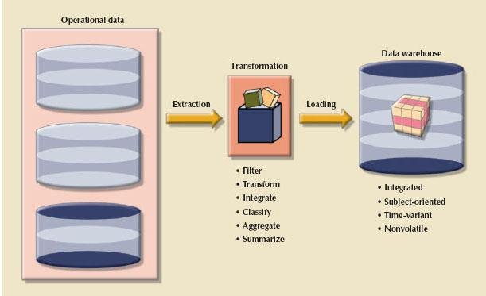
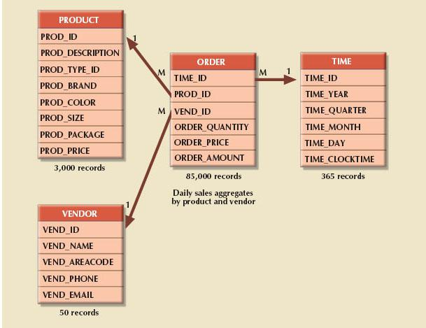
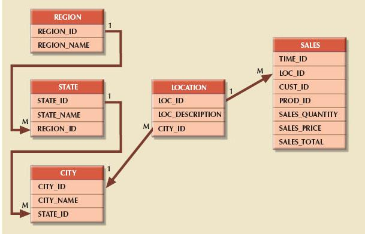
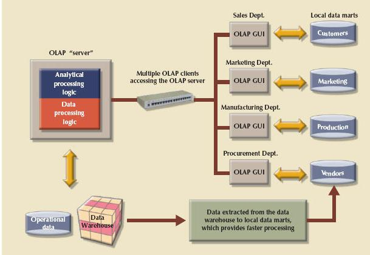

How business intelligence provides a comprehensive business decision support framework
How business intelligence provides a comprehensive business decision support framework13 BUSINESS INTELLIGENCE AND DATA WAREHOUSES
In this chapter, you will learn:
How business intelligence provides a comprehensive business decision support framework
About business intelligence architecture, its evolution, and reporting styles
About the relationship and differences between operational data and decision support data
What a data warehouse is and how to prepare data for one
What star schemas are and how they are constructed
About data analytics, data mining, and predictive analytics
About online analytical processing (OLAP)
How SQL extensions are used to support OLAP-type data manipulations
Preview
Ultimately, the reason for collecting, storing, and managing data is to generate information that becomes the basis for rational decision making. Decision support systems (DSSs) were originally developed to facilitate the decision-making process. However, as the complexity and range of information requirements increased, so did the difficulty of extracting all the necessary information from the data structures typically found in an operational database. Therefore, a new data storage facility, called a data warehouse, was developed. The data warehouse extracts or obtains its data from operational databases as well as from external sources, providing a more comprehensive data pool.
In parallel with data warehouses, new ways to analyze and present decision support data were developed. Online analytical processing (OLAP) provides advanced data analysis and visualization tools, including multidimensional data analysis. Data mining employs advanced statistical tools to analyze the wealth of data now available through data warehouses and other sources and to identify possible relationships and anomalies. Predictive analytics uses advanced statistical and modeling techniques to predict future business outcomes with great accuracy.
Business intelligence (BI) is the collection of best practices and software tools developed to support business decision making in this age of globalization, emerging markets, rapid change, and increasing regulation. This chapter explores the main concepts and components of business intelligence and decision support systems that gather, generate, and present information for business decision makers, focusing especially on the use of data warehouses.
13.1 THE NEED FOR DATA ANALYSIS
Organizations tend to grow and prosper as they gain a better understanding of their environment. Most managers need to track daily transactions to evaluate how the business is performing. By tapping into the operational database, management can develop an understanding of how the company is performing and evaluate whether the current strategies meet organizational goals. In addition, analyzing the company data can provide insightful information about short-term tactical evaluations and strategic questions, such as: Are our sales promotions working? What market percentage are we controlling? Are we attracting new customers? Tactical and strategic decisions are also shaped by constant pressure from external and internal forces, including globalization, the cultural and legal environment, and technology.
Organizations are always looking for a competitive advantage through product development, market positioning, sales promotions, and customer service. Thanks to the Internet, customers are more informed than ever about the products they want and the prices they are willing to pay. Technology advances allow customers to place orders using their smart phones while they commute to work in the morning. Decision makers can no longer wait a couple of days for a report to be generated; they are compelled to make quick decisions if they want to remain competitive. Every day, TV ads offer low-price warranties, instant price matching, and so on. How can companies survive on lower margins and still make a profit? The key is in having the right data at the right time to support the decision-making process.
This process takes place at all levels of an organization. For example, transaction-processing systems, based on operational databases, are tailored to serve the information needs of people who deal with short-term inventory, accounts payable, and purchasing. Middle-level managers, general managers, vice presidents, and presidents focus on strategic and tactical decision making. Those managers require summarized information designed to help them make decisions in a complex business environment.
Companies and software vendors addressed these multilevel decision support needs by creating autonomous applications for particular groups of users, such as those in finance, customer management, human resources, and product support. Applications were also tailored to different industries such as education, retail, health care, and finance. This approach worked well for some time, but changes in the business world, such as globalization, expanding markets, mergers and acquisitions, increased regulation, and new technologies, called for new ways of integrating and managing decision support across levels, sectors, and geographic locations. This more comprehensive and integrated decision support framework within organizations became known as business intelligence.
Business intelligence (BI)1 is a term that describes a comprehensive, cohesive, and integrated set of tools and processes used to capture, collect, integrate, store, and analyze data with the purpose of generating and presenting information to support business decision making. This intelligence is based on learning and understanding the facts about the business environment. BI is a framework that allows a business to transform data into information, information into knowledge, and knowledge into wisdom. BI has the potential to positively affect a company’s culture by creating continuous business performance improvement through active decision support at all levels in an organization. This business insight empowers users to make sound decisions based on the accumulated knowledge of the business.
BI’s initial adopters were high-volume industries such as financial services, insurance, and healthcare companies. As BI technology evolved, its usage spread to other industries such as telecommunications, retail/merchandising, manufacturing, media, government, and even education. Table 13.1 lists some companies that have implemented BI tools and shows how the tools benefited the companies. You will learn about these tools later in the chapter.
TABLE 13.1 Solving Business Problems and Adding Value with BI Tools
Implementing BI in an organization involves capturing not only internal and external business data, but also the metadata, or knowledge about the data. In practice, BI is a complex proposition that requires a deep understanding and alignment of the business processes, business data, and information needs of users at all levels in an organization. (See Appendix O, Data Warehouse Implementation Factors.)
BI is not a product by itself, but a framework of concepts, practices, tools, and technologies that help a business better understand its core capabilities, provide snapshots of the company situation, and identify key opportunities to create competitive advantage. In general, BI provides a framework for:
1. Collecting and storing operational data
2. Aggregating the operational data into decision support data
3. Analyzing decision support data to generate information
4. Presenting such information to the end user to support business decisions
5. Making business decisions, which in turn generate more data that are collected, stored, and so on (restarting the process)
6. Monitoring results to evaluate outcomes of the business decisions, which again provides more data to be collected, stored, and so on
7. Predicting future behaviors and outcomes with a high degree of accuracy
The seven preceding points represent a systemwide view of the flow of data, processes, and outcomes within the BI framework. In practice, the first point, collecting and storing operational data, does not fall into the realm of a BI system per se; rather, it is the function of an operational system. However, the BI system will use the operational data as input material from which information will be derived. The rest of the processes and outcomes explained in the preceding points are oriented toward generating knowledge, and they are the focus of the BI system.
In the following section, you will learn about the basic BI architecture.
13.2.1 BUSINESS INTELLIGENCE ARCHITECTURE
BI covers a range of technologies and applications to manage the entire data life cycle from acquisition to storage, transformation, integration, presentation, analysis, monitoring, and archiving. BI functionality ranges from simple data gathering and transformation to very complex data analysis and presentation. BI architecture ranges from highly integrated single-vendor systems to loosely integrated, multivendor environments. However, some common functions are expected in most BI implementations.
Like any critical business IT infrastructure, the BI architecture is composed of data, people, processes, technology, and the management of such components. Figure 13.1 depicts how all these components fit together within the BI framework.
FIGURE 13.1 Business intelligence framework

SOURCE: Course Technology/Cengage Learning
The general BI framework depicted in Figure 13.1 has six basic components that encompass the functionality required on most current-generation BI systems. You will learn more about these components later in this chapter. The components are briefly described in Table 13.2.
TABLE 13.2 Basic BI Architectural Components
Each BI component shown in Table 13.2 has generated a fast-growing market for specialized tools. Thanks to technological advancements, the components can interact with other components to form a truly open architecture. As a matter of fact, you can integrate multiple tools from different vendors into a single BI framework. Table 13.3 shows a sample of common BI tools and vendors.
TABLE 13.3 Sample of Business Intelligence Tools
NOTE
You will learn about data warehouses, data mining, and OLAP tools later in this chapter.
As depicted in Figure 13.1, BI integrates people and processes using technology to add value to the business. Such value is derived from how end users apply such information in their daily activities, and particularly in their daily business decision making.
The focus of traditional information systems was on operational automation and reporting; in contrast, BI tools focus on the strategic and tactical use of information. To achieve this goal, BI recognizes that technology alone is not enough. Therefore, BI uses an arrangement of best management practices to manage data as a corporate asset. One of the most recent developments in this area is the use of master data management techniques. Master data management (MDM) is a collection of concepts, techniques, and processes for the proper identification, definition, and management of data elements within an organization. MDM’s main goal is to provide a comprehensive and consistent definition of all data within an organization. MDM ensures that all company resources (people, procedures, and IT systems) that work with data have uniform and consistent views of the company’s data.
An added benefit of this meticulous approach to data management and decision making is that it provides a framework for business governance. Governance is a method or process of government. In this case, BI provides a method for controlling and monitoring business health and for consistent decision making. Furthermore, having such governance creates accountability for business decisions. In the present age of business flux, accountability is increasingly important. Had governance been as pivotal to business operations a few years back, crises precipitated by Enron, WorldCom, Arthur Andersen, and the 2008 financial meltdown might have been avoided.
Monitoring a business’s health is crucial to understanding where the company is and where it is headed. To do this, BI makes extensive use of a special type of metrics known as key performance indicators. Key performance indicators (KPIs) are quantifiable numeric or scale-based measurements that assess the company’s effectiveness or success in reaching its strategic and operational goals. Many different KPIs are used by different industries. Some examples of KPIs are:
• General. Year-to-year measurements of profit by line of business, same-store sales, product turnovers, product recalls, sales by promotion, and sales by employee
• Finance. Earnings per share, profit margin, revenue per employee, percentage of sales to account receivables, and assets to sales
• Human resources. Applicants to job openings, employee turnover, and employee longevity
• Education. Graduation rates, number of incoming freshmen, student retention rates, publication rates, and teaching evaluation scores
KPIs are determined after the main strategic, tactical, and operational goals are defined for a business. To tie the KPI to the strategic master plan of an organization, a KPI is compared to a desired goal within a specific time frame. For example, if you are in an academic environment, you might be interested in ways to measure student satisfaction or retention. In this case, a sample goal would be to increase the final exam grades of graduating high school seniors by fall 2015. Another sample KPI would be to increase the returning student rate from freshman year to sophomore year from 60 percent to 75 percent by 2015. In this case, such performance indicators would be measured and monitored on a year-to-year basis, and plans to achieve such goals would be set in place.
Although BI has an unquestionably important role in modern business operations, the manager must initiate the decision support process by asking the appropriate questions. The BI environment exists to support the manager; it does not replace the management function. If the manager fails to ask the appropriate questions, problems will not be identified and solved, and opportunities will be missed. In spite of the very powerful BI presence, the human component is still at the center of business technology.
The main BI architectural components were illustrated in Figure 13.1 and further explained in Tables 13.2 and 13.3. However, the heart of the BI system is its advanced information generation and decision support capabilities. A BI system’s advanced decision support functions come to life via its intuitive and informational user interface, and particularly its reporting capabilities. A modern BI system provides three distinctive reporting styles:
• Advanced reporting. A BI system presents insightful information about the organization in a variety of presentation formats. Furthermore, the reports provide interactive features that allow the end user to study the data from multiple points of view—from highly summarized to very detailed data. The reports present key actionable information used to support decision making.
• Monitoring and alerting. After a decision has been made, the BI system offers ways to monitor the decision’s outcome. The BI system provides the end user with ways to define metrics and other key performance indicators to evaluate different aspects of an organization. In addition, exceptions and alerts can be set to warn managers promptly about deviations or problem areas.
• Advanced data analytics. A BI system provides tools to help the end user discover relationships, patterns, and trends hidden within the organization’s data. These tools are used to create two types of data analysis: explanatory and predictive. Explanatory analysis provides ways to discover relationships, trends, and patterns among data, while predictive analysis provides the end user with ways to create models that predict future outcomes.
Understanding the architectural components of a BI framework is the first step in properly implementing BI in an organization. A good BI infrastructure promises many benefits to an organization, as outlined in the next section.
13.2.2 BUSINESS INTELLIGENCE BENEFITS
As you have learned in previous sections, a properly implemented BI architecture could provide a framework for continuous performance improvements and business decision making. Improved decision making is the main goal of BI, but BI provides other benefits:
• Integrating architecture. Like any other IT project, BI has the potential of becoming the integrating umbrella for a disparate mix of IT systems within an organization. This architecture could support all types of company-generated data from operational to executive, as well as diverse hardware such as mainframes, servers, desktops for managers and executives, and mobile devices on the shop floor.
• Common user interface for data reporting and analysis. BI front ends can provide up-to-the-minute consolidated information using a common interface for all company users. IT departments no longer have to provide multiple training options for diverse interfaces. End users benefit from similar or common interfaces in different devices that use multiple clever and insightful presentation formats.
• Common data repository fosters single version of company data. In the past, multiple IT systems supported different aspects of an organization’s operations. Such systems collected and stored data in separate data stores. Keeping the data synchronized and up to date has always been difficult. BI provides a framework to integrate such data under a common environment and present a single version of the data.
• Improved organizational performance. BI can provide competitive advantages in many different areas, from customer support to manufacturing processes. Such advantages can be reflected in added efficiency, reduced waste, increased sales, reduced employee and customer turnover, and most importantly, an increased bottom line for the business.
Achieving all these benefits takes a lot of human, financial, and technological resources, not to mention time. BI benefits are not achieved overnight, but are the result of a focused company-wide effort that could take a long time. As a matter of fact, as you will learn in the next section, the BI field has evolved over a long period of time itself.
13.2.3 BUSINESS INTELLIGENCE EVOLUTION
Providing useful information to end users has been a priority of IT systems since mainframe computing became an integral part of corporations. Business decision support has evolved over many decades. Following computer technology advances, business intelligence started with centralized reporting systems and evolved into today’s highly integrated BI environments. Table 13.4 summarizes the evolution of BI systems.
TABLE 13.4 Business Intelligence Evolution
Using Table 13.4 as a guide, you can trace business intelligence from the mainframe environment to the desktop and then to the more current cloud-based, mobile BI environments. (Chapter 14, Database Connectivity and Web Technologies, provides a detailed discussion of cloud-based systems.)
The precursor of the modern BI environment was the first-generation decision support system. A decision support system (DSS) is an arrangement of computerized tools used to assist managerial decision making. A DSS typically has a much narrower focus and reach than a BI solution. At first, decision support systems were the realm of a few selected managers in an organization. Over time, and with the introduction of the desktop computer, decision support systems migrated to more agile platforms, such as minicomputers, high-end servers, commodity servers, appliances, and cloud-based offerings. This evolution effectively changed the reach of decision support systems; BI is no longer limited to a small group of top-level managers with training in statistical modeling. Instead, BI is now available to all users in an organization, from line managers to the shop floor to mobile agents in the field.
You can also use Table 13.4 to track the evolution of information dissemination styles used in business intelligence.
• Starting in the late 1970s, the need for information distribution was filled by centralized reports running on mainframes, minicomputers, or even central server environments. Such reports were predefined and took considerable time to process.
• With the introduction of desktop computers in the 1980s, a new style of information distribution, the spreadsheet, emerged as the dominant format for decision support systems. In this environment, managers downloaded information from centralized data stores and manipulated the data in desktop spreadsheets.
• As the use of spreadsheets multiplied, IT departments tried to manage the flow of data in a more formal way using enterprise reporting systems. These systems were developed in the early 1990s and basically integrated all data into an IT umbrella that started with the first-generation DSS. The systems still used spreadsheet-like features with which end users were familiar.
• Once DSSs were established, the evolution of business intelligence flourished with the introduction of the data warehouse and online analytical processing systems (OLAPs) in the mid-1990s.
• Rapid changes in information technology and the Internet revolution led to the introduction of advanced BI systems such as Web-based dashboards in the early 2000s and mobile BI later in the decade. With mobile BI, end users access BI reports via native applications that run on a mobile smart device, such as the iPhone, Blackberry, or iPad.
Figure 13.2 depicts the evolution of BI information dissemination.
FIGURE 13.2 Evolution of BI information dissemination formats
Credit: Oleksiy Mark / Shutterstock.com
SOURCE: Course Technology/Cengage Learning
NOTE
The OLAP environment is covered in Section 13.7 of this chapter.
Although now in its infancy, mobile BI technology is poised to have a significant impact on the way BI information is disseminated and processed. If the number of students using smart phones to communicate with friends, update their Facebook status, and send tweets on Twitter is any indicator, you can expect the next generation of consumers and workers to be highly mobile. Leading corporations are therefore starting to push decision making to agents in the field to facilitate customer relationships, sales and ordering, and product support. Such mobile technologies are so portable and interactive that some users call them “disruptive” technologies.
BI information technology has evolved from centralized reporting styles to the current, mobile BI style in just over a decade. The rate of technological change is not slowing down; to the contrary, technology advancements are accelerating the adoption of BI to new levels. The next section illustrates some BI technology trends.
13.2.4 BUSINESS INTELLIGENCE TECHNOLOGY TRENDS
Several technological advances are driving the growth of business intelligence technologies. These advances create new generations of more affordable products and services that are faster and easier to use. In turn, such products and services open new markets and work as driving forces in the increasing adoption of business intelligence technologies within organizations. Some of the more remarkable technological trends are:
• Data storage improvements. New data storage technologies, such as solid state drives (SSD) and Serial Advanced Technology Attachment (SATA) drives, offer increased performance and larger capacity that make data storage faster and more affordable. Currently you can buy single drives with a capacity approaching four terabytes.
• Business intelligence appliances. Vendors now offer plug-and-play appliances optimized for data warehouse and BI applications. These new appliances offer improved price-performance ratios, simplified administration, rapid installation, scalability, and fast integration. Examples of these vendors include IBM, Netezza, Greenplum, and AsterData.
• Business intelligence as a service. Companies are starting to offer data warehouses and BI as a service. These cloud-based services allow any corporation to rapidly develop a data warehouse store without the need for hardware, software, or extra personnel. These prepackaged services offer “pay-as-you-go” models for specific industries and capacities, and they provide an opportunity for organizations to pilot-test a BI project without incurring large time or cost commitments. Such services are offered by Netezza, AppNexus, AsterData, MicroStrategy, and Kognitio.
• Big Data analytics. In Chapter 2, Data Models, you learned about Big Data and column-store databases. The Big Data phenomenon is creating a new market for data analytics. Organizations are turning to social media as the new source for information and knowledge to gain competitive advantages. Examples of Big Data analytics vendors include Vertica, AsterData, and Netezza.
• Personal analytics. OLAP brought data analytics to the desktop of every end user in an organization. Mobile BI is extending business decision making outside the walls of the organization. BI can now be deployed to mobile users who are closer to customers. The main requirement is for the BI end user to have a key understanding of the business. Examples of personal analytics vendors include MicroStrategy, QlikView, and Actuate.
One constant in this relentless technological evolution is the need for better decision support data and the importance of understanding the difference between decision support data and operational data.
Although BI is used at strategic and tactical managerial levels within organizations, its effectiveness depends on the quality of data gathered at the operational level. Yet, operational data are seldom well suited to the decision support tasks. The differences between operational data and decision support data are examined in the next section.
13.3.1 OPERATIONAL DATA VS. DECISION SUPPORT DATA
Operational data and decision support data serve different purposes. Therefore, it is not surprising to learn that their formats and structures differ. Most operational data are stored in a relational database in which the structures (tables) tend to be highly normalized. Operational data storage is optimized to support transactions that represent daily operations. For example, each time an item is sold, it must be accounted for. Customer data, inventory data, and other similar data need frequent updating. To provide effective update performance, operational systems store data in many tables, each with a minimum number of fields. Thus, a simple sales transaction might be represented by five or more different tables, such as INVOICE, INVOICE LINE, DISCOUNT, STORE, and DEPARTMENT. Although such an arrangement is excellent in an operational database, it is not efficient for query processing. For example, to extract a simple invoice, you would have to join several tables. Whereas operational data are useful for capturing daily business transactions, decision support data give tactical and strategic business meaning to the operational data. From the data analyst’s point of view, decision support data differ from operational data in three main areas: time span, granularity, and dimensionality.
• Time span. Operational data cover a short time frame. In contrast, decision support data tend to cover a longer time frame. Managers are seldom interested in a specific sales invoice to customer X; rather, they tend to focus on sales generated during the last month, the last year, or the last five years.
• Granularity (level of aggregation). Decision support data must be presented at different levels of aggregation, from highly summarized to nearly atomic. For example, if managers analyze regional sales, they must be able to access data showing the sales by region, by city within the region, by store within the city within the region, and so on. In that case, summarized data to compare the regions is required, along with data in a structure that enables a manager to drill down, or decompose, the data into more atomic components—that is, finergrained data at lower levels of aggregation. In contrast, when you roll up the data, you are aggregating the data to a higher level.
• Dimensionality. Operational data focus on representing individual transactions rather than the effects of the transactions over time. In contrast, data analysts tend to include many data dimensions and are interested in how the data relate over those dimensions. For example, an analyst might want to know how product X fared relative to product Z during the past six months by region, state, city, store, and customer. In that case, both place and time are part of the picture.
Figure 13.3 shows how decision support data can be examined from multiple dimensions such as product, region, and year, using a variety of filters to produce each dimension. The ability to analyze, extract, and present information in meaningful ways is one of the differences between decision support data and transaction-at-a-time operational data.
FIGURE 13.3 Transforming operational data into decision support data
SOURCE: Course Technology/Cengage Learning
 ONLINE CONTENT
ONLINE CONTENT
The operational data in Figure 13.3 are available at www.cengagebrain.com. The decision support data in Figure 13.3 show the output for the solution to Problem 2 at the end of this chapter.
From the designer’s point of view, the differences between operational and decision support data are as follows:
• Operational data represent transactions as they happen in real time. Decision support data are a snapshot of the operational data at a given point in time. Therefore, decision support data are historic, representing a time slice of the operational data.
• Operational and decision support data are different in terms of transaction type and transaction volume. Whereas operational data are characterized by update transactions, decision support data are mainly characterized by read-only transactions. Decision support data also require periodic updates to load new data that are summarized from the operational data. Finally, the concurrent transaction volume in operational data tends to be very high compared with the low to medium levels in decision support data.
• Operational data are commonly stored in many tables, and the stored data represent information about a given transaction only. Decision support data are generally stored in a few tables derived from the operational data. The decision support data do not include the details of each operational transaction. Instead, decision support data represent transaction summaries; therefore, the decision support database stores data that are integrated, aggregated, and summarized for decision support purposes.
• The degree to which decision support data are summarized is very high when contrasted with operational data. Therefore, you will see a great deal of derived data in decision support databases. For example, rather than storing all 10,000 sales transactions for a given store on a given day, the decision support database might simply store the total number of units sold and the total sales dollars generated during that day. Decision support data might be collected to monitor such aggregates as total sales for each store or for each product. The purpose of the summaries is simple: they are used to establish and evaluate sales trends and product sales comparisons, and to provide other data that serve decision needs. (How well are items selling? Should this product be discontinued? Has the advertising been effective as measured by increased sales?)
• The data models that govern operational data and decision support data are different. The operational database’s frequent and rapid data updates make data anomalies a potentially devastating problem. Therefore, the data in a relational transaction (operational) system generally require normalized structures that yield many tables, each of which contains the minimum number of attributes. In contrast, the decision support database is not subject to such transaction updates, and the focus is on querying capability. Therefore, decision support databases tend to be non-normalized and include few tables, each of which contains a large number of attributes.
• The frequency and complexity of query activity in the operational database tends to be low to allow additional processing cycles for the more crucial update transactions. Therefore, queries against operational data typically are narrow in scope and low in complexity, and high speed is critical. In contrast, decision support data exist for the sole purpose of serving query requirements. Queries against decision support data typically are broad in scope and high in complexity, and less speed is needed.
• Finally, decision support data are characterized by very large amounts of data. The large data volume is the result of two factors. First, data are stored in non-normalized structures that are likely to display many data redundancies and duplications. Second, the same data can be categorized in many different ways to represent different snapshots. For example, sales data might be stored in relation to product, store, customer, region, and manager.
Table 13.5 summarizes the differences between operational and decision support data from the database designer’s point of view.
TABLE 13.5 Contrasting Operational and Decision Support Data Characteristics
CHARACTERISTIC | OPERATIONAL DATA | DECISION SUPPORT DATA |
Data currency | Current operations Real-time data | Historic data Snapshot of company data Time component (week/month/year) |
Granularity | Atomic-detailed data | Summarized data |
Summarization level | Low; some aggregate yields | High; many aggregation levels |
Data model | Highly normalized Mostly relational DBMSs | Non-normalized Complex structures Some relational, but mostly multidimensional DBMSs |
Transaction type | Mostly updates | Mostly query |
Transaction volumes | High update volumes | Periodic loads and summary calculations |
Transaction speed | Updates are critical | Retrievals are critical |
Query activity | Low to medium | High |
Query scope | Narrow range | Broad range |
Query complexity | Simple to medium | Very complex |
Data volumes | Hundreds of gigabytes | Terabytes to petabytes |
The many differences between operational data and decision support data are good indicators of decision support database requirements, which are described in the next section.
13.3.2 DECISION SUPPORT DATABASE REQUIREMENTS
A decision support database is a specialized DBMS tailored to provide fast answers to complex queries. There are three main requirements for a decision support database: the database schema, data extraction and filtering, and database size.
Database Schema
The decision support database schema must support complex (non-normalized) data representations. As noted earlier, the decision support database must contain data that are aggregated and summarized. In addition to meeting those requirements, the queries must be able to extract multidimensional time slices. If you are using an RDBMS, the conditions suggest using non-normalized and even duplicated data. To see why this must be true, take a look at the 10-year sales history for a single store containing a single department. At this point, the data are fully normalized within the single table, as shown in Table 13.6.
TABLE 13.6 Ten-Year Sales History for a Single Department, in Millions of Dollars
YEAR | SALES |
2002 | 8,227 |
2003 | 9,109 |
2004 | 10,104 |
2005 | 11,553 |
2006 | 10,018 |
2007 | 11,875 |
2008 | 12,699 |
2009 | 14,875 |
2010 | 16,301 |
2011 | 19,986 |
This structure works well when you have only one store with only one department. However, it is very unlikely that such a simple environment has much need for a decision support database. A decision support database becomes a factor when you are dealing with more than one store, each of which has more than one department. To support all of the decision support requirements, the database must contain data for all of the stores and all of their departments—and the database must be able to support multidimensional queries that track sales by stores, by departments, and over time. For simplicity, suppose that there are only two stores (A and B) and two departments (1 and 2) within each store. Also, change the time dimension to include yearly data. TABLE 13.7 shows the sales figures under the specified conditions. Only 2002, 2006, and 2011 are shown; ellipses (…) are used to indicate that data values were omitted. You can see in Table 13.7 that the number of rows and attributes already multiplies quickly and that the table exhibits multiple redundancies.
TABLE 13.7 Yearly Sales Summaries, Two Stores and Two Departments per Store, in Millions of Dollars
Now suppose that the company has 10 departments per store and 20 stores nationwide, and suppose that you want to access yearly sales summaries. Now you are dealing with 200 rows and 12 monthly sales attributes per row. (Actually, there are 13 attributes per row if you add each store’s sales total for each year.)
The decision support database schema must also be optimized for query (read-only) retrievals. To optimize query speed, the DBMS must support features such as bitmap indexes and data partitioning. In addition, the DBMS query optimizer must be enhanced to support the non-normalized and complex structures in decision support databases.
Data Extraction and Filtering
The decision support database is created largely by extracting data from the operational database and by importing additional data from external sources. Thus, the DBMS must support advanced data extraction and data-filtering tools. To minimize the impact on the operational database, the data extraction capabilities should allow batch and scheduled data extraction, and should support different data sources: flat files and hierarchical, network, and relational databases, as well as multiple vendors. Data-filtering capabilities must include the ability to check for inconsistent data or data validation rules. Finally, to filter and integrate the operational data into the decision support database, the DBMS must support advanced data integration, aggregation, and classification.
Using data from multiple external sources also usually means having to solve data-formatting conflicts. For example, data such as Social Security numbers and dates can occur in different formats; measurements can be based on different scales, and the same data elements can have different names. In short, data must be filtered and purified to ensure that only the pertinent decision support data are stored in the database and that they are stored in a standard format.
Database Size
Decision support databases tend to be very large; gigabyte and terabyte ranges are not unusual. For example, in 2008, Wal-Mart had more than four petabytes of data in its data warehouses. Therefore, the DBMS must be capable of supporting very large databases (VLDBs). To support a VLDB adequately, the DBMS might be required to support advanced storage technologies, and even more importantly, to support multiple-processor technologies, such as a symmetric multiprocessor (SMP) or a massively parallel processor (MPP).
The complex information requirements and the ever-growing demand for sophisticated data analysis sparked the creation of a new type of data repository. This repository, called a data warehouse, contains data in formats that facilitate data extraction, data analysis, and decision making. It has become the foundation for a new generation of decision support systems.
Bill Inmon, the acknowledged “father” of the data warehouse, defines the term as “an integrated, subject-oriented, time-variant, nonvolatile collection of data that provides support for decision making.”2 (Italics were added for emphasis.) To understand that definition, take a more detailed look at its components.
• Integrated. The data warehouse is a centralized, consolidated database that integrates data derived from the entire organization and from multiple sources with diverse formats. Data integration implies that all business entities, data elements, data characteristics, and business metrics are described in the same way throughout the enterprise. Although this requirement sounds logical, you would be amazed to discover how many different measurements for “sales performance” can exist within an organization; the same scenario can be true for any other business element. For instance, the status of an order might be indicated with text labels such as “open,” “received,” “canceled,” and “closed” in one department and as “1,” “2,” “3,” and “4” in another department. A student’s status might be defined as “freshman,” “sophomore,” “junior,” or “senior” in the accounting department and as “FR,” “SO,” “JR,” or “SR” in the computer information systems department. To avoid the potential format tangle, the data in the data warehouse must conform to a common format that is acceptable throughout the organization. This integration can be time-consuming, but once accomplished, it enhances decision making and helps managers better understand the company’s operations. This understanding can be translated into recognition of strategic business opportunities.
• Subject-oriented. Data warehouse data are arranged and optimized to provide answers to questions from diverse functional areas within a company. Data warehouse data are organized and summarized by topic, such as sales, marketing, finance, distribution, and transportation. For each topic, the data warehouse contains specific subjects of interest—products, customers, departments, regions, promotions, and so on. This form of data organization is quite different from the more functional or process-oriented organization of typical transaction systems. For example, an invoicing system designer concentrates on designing normalized data structures to support the business process by storing invoice components in two tables: INVOICE and INVLINE. In contrast, the data warehouse has a subject orientation. Data warehouse designers focus specifically on the data rather than on the processes that modify the data. (After all, data warehouse data are not subject to numerous realtime data updates!) Therefore, instead of storing an invoice, the data warehouse stores its “sales by product” and “sales by customer” components because decision support activities require the retrieval of sales summaries by product or customer.
• Time-variant. In contrast to operational data, which focus on current transactions, warehouse data represent the flow of data through time. The data warehouse can even contain projected data generated through statistical and other models. It is also time-variant in the sense that when data are periodically uploaded to the data warehouse, all time-dependent aggregations are recomputed. For example, when data for previous weekly sales are uploaded to the data warehouse, the weekly, monthly, yearly, and other time-dependent aggregates for products, customers, stores, and other variables are also updated. Because data in a data warehouse constitute a snapshot of the company history as measured by its variables, the time component is crucial. The data warehouse contains a time ID that is used to generate summaries and aggregations by week, month, quarter, year, and so on. Once the data enter the data warehouse, the time ID assigned to the data cannot be changed.
• Nonvolatile. Once data enter the data warehouse, they are never removed. Because the data in the warehouse represent the company’s history, the operational data, which represent the near-term history, are always added to it. Because data are never deleted and new data are continually added, the data warehouse is always growing. Therefore, the DBMS must be able to support multiterabyte or greater databases operating on multiprocessor hardware.
Table 13.8 summarizes the differences between data warehouses and operational databases.
TABLE 13.8 Characteristics of Data Warehouse Data and Operational Database Data
In summary, the data warehouse is a read-only database optimized for data analysis and query processing. Typically, data are extracted from various sources and are then transformed and integrated—in other words, passed through a data filter—before being loaded into the data warehouse. As mentioned, this process is known as ETL. Figure 13.4 illustrates the ETL process to create a data warehouse from operational data.

SOURCE: Course Technology/Cengage Learning
Although the centralized and integrated data warehouse can be an attractive proposition that yields many benefits, managers may be reluctant to embrace this strategy. Creating a data warehouse requires time, money, and considerable managerial effort. Therefore, it is not surprising that many companies begin their foray into data warehousing by focusing on more manageable data sets that are targeted to meet the special needs of small groups within the organization. These smaller data stores are called data marts.
A data mart is a small, single-subject data warehouse subset that provides decision support to a small group of people. In addition, a data mart could be created from data extracted from a larger data warehouse for the specific purpose of supporting faster data access to a target group or function. That is, data marts and data warehouses can coexist within a business intelligence environment.
Some organizations choose to implement data marts not only because of the lower cost and shorter implementation time but because of the technological advances and inevitable “people issues” that make data marts attractive. Powerful computers can provide a customized decision support system to small groups in ways that might not be possible with a centralized system. Also, a company’s culture may predispose its employees to resist major changes, but they might quickly embrace relatively minor changes that lead to demonstrably improved decision support. In addition, people at different organizational levels are likely to require data with different summarization, aggregation, and presentation formats. Data marts can serve as a test vehicle for companies exploring the potential benefits of data warehouses. By gradually migrating from data marts to data warehouses, a specific department’s decision support needs can be addressed within six months to one year, as opposed to the one- to three-year time frame usually required to implement a data warehouse. Information technology (IT) departments also benefit from this approach because their personnel can learn the issues and develop the skills required to create a data warehouse.
The only difference between a data mart and a data warehouse is the size and scope of the problem being solved. The problem definitions and data requirements are essentially the same for both. To be useful, the data warehouse must conform to uniform structures and formats to avoid data conflicts and support decision making.
13.4.2 TWELVE RULES THAT DEFINE A DATA WAREHOUSE
In 1994, Bill Inmon and Chuck Kelley created a set of rules to define a data warehouse. These rules summarize many of the points made in this chapter about data warehouses.3 The 12 rules for a data warehouse are shown in Table 13.9.
TABLE 13.9 Twelve Rules for a Data Warehouse
RULE NO. | DESCRIPTION |
1 | The data warehouse and operational environments are separated. |
2 | The data warehouse data are integrated. |
3 | The data warehouse contains historical data over a long time. |
4 | The data warehouse data are snapshot data captured at a given point in time. |
5 | The data warehouse data are subject oriented. |
6 | The data warehouse data are mainly read-only with periodic batch updates from operational data. No online updates are allowed. |
7 | The data warehouse development life cycle differs from classical systems development. Data warehouse development is data-driven; the classical approach is process-driven. |
8 | The data warehouse contains data with several levels of detail: current detail data, old detail data, lightly summarized data, and highly summarized data. |
9 | The data warehouse environment is characterized by read-only transactions to very large data sets. The operational environment is characterized by numerous update transactions to a few data entities at a time. |
10 | The data warehouse environment has a system that traces data sources, transformations, and storage. |
11 | The data warehouse’s metadata are a critical component of this environment. The metadata identify and define all data elements. The metadata provide the source, transformation, integration, storage, usage, relationships, and history of each data element. |
12 | The data warehouse contains a chargeback mechanism for resource usage that enforces optimal use of the data by end users. |
Note how the 12 rules capture the complete data warehouse life cycle—from its introduction as an entity separate from the operational data store to its components, functionality, and management processes.
Most data warehouse implementations are based on the relational database model, and their market share suggests that their popularity will not fade anytime soon. Relational data warehouses use the star schema design technique to handle multidimensional data.
The star schema is a data-modeling technique used to map multidimensional decision support data into a relational database. In effect, the star schema creates the near equivalent of a multidimensional database schema from the existing relational database. Star schemas yield an easily implemented model for multidimensional data analysis while preserving the relational structures on which the operational database is built. The basic star schema has four components: facts, dimensions, attributes, and attribute hierarchies.
Facts are numeric measurements (values) that represent a specific business aspect or activity. For example, sales figures are numeric measurements that represent product and service sales. Facts commonly used in business data analysis are units, costs, prices, and revenues. Facts are normally stored in a fact table that is the center of the star schema. The fact table contains facts that are linked through their dimensions, which are explained in the next section.
Facts can also be computed or derived at run time. Such computed or derived facts are sometimes called metrics to differentiate them from stored facts. The fact table is updated periodically with data from operational databases.
Dimensions are qualifying characteristics that provide additional perspectives to a given fact. Recall that dimensions are of interest because decision support data are almost always viewed in relation to other data. For instance, sales might be compared by product from region to region and from one time period to the next. The kind of problem typically addressed by a BI system might be to compare the sales of unit X by region for the first quarters of 2002 through 2012. In that example, sales have product, location, and time dimensions. In effect, dimensions are the magnifying glass through which you study the facts. Such dimensions are normally stored in dimension tables. Figure 13.5 depicts a star schema for sales with product, location, and time dimensions.
FIGURE 13.5 Simple star schema
SOURCE: Course Technology/Cengage Learning
Each dimension table contains attributes. Attributes are often used to search, filter, or classify facts. Dimensions provide descriptive characteristics about the facts through their attributes. Therefore, the data warehouse designer must define common business attributes that will be used by the data analyst to narrow a search, group information, or describe dimensions. Using a sales example, some possible attributes for each dimension are illustrated in Table 13.10.
TABLE 13.10 Possible Attributes for Sales Dimensions
These product, location, and time dimensions add a business perspective to the sales facts. The data analyst can now group the sales figures for a given product, in a given region, and at a given time. The star schema, through its facts and dimensions, can provide the data in a format suited for data analysis. Also, it can do so without imposing the burden of additional and unnecessary data, such as order number, purchase order number, and status, that commonly exist in operational databases.
Conceptually, the sales example’s multidimensional data model is best represented by a three-dimensional cube. Of course, this does not imply that there is a limit on the number of dimensions you can associate to a fact table. There is no mathematical limit to the number of dimensions used. However, using a three-dimensional model makes it easy to visualize the problem. The three-dimensional cube illustrated in Figure 13.6 represents a view of sales with product, location, and time dimensions.
FIGURE 13.6 Three-dimensional view of sales

SOURCE: Course Technology/Cengage Learning
Keep in mind that this cube is only a conceptual representation of multidimensional data; it does not show how the data are physically stored in a data warehouse.
Whatever the underlying database technology, one of the main features of multidimensional analysis is its ability to focus on specific “slices” of the cube. For example, the product manager may be interested in examining the sales of a product while the store manager is interested in examining the sales made by a particular store. In multidimensional terms, the ability to focus on slices of the cube to perform a more detailed analysis is known as slice and dice. Figure 13.7 illustrates the slice-and-dice concept; note that each cut across the cube yields a slice. Intersecting slices produce small cubes that constitute the “dice” part of the slice-and-dice operation.
FIGURE 13.7 Slice-and-dice view of sales
SOURCE: Course Technology/Cengage Learning
To slice and dice, it must be possible to identify each slice of the cube. To do so, you use the values of each attribute in a given dimension. For example, to use the location dimension, you might need to define a STORE_ID attribute to focus on a particular store.
Given the requirement for attribute values in a slice-and-dice environment, reexamine Table 13.10. Note that each attribute adds perspective to the sales facts, thus setting the stage for finding new ways to search, classify, and possibly aggregate information. For example, the location dimension adds a geographic perspective of where the sales took place: in which region, state, city, store, and so on. All of the attributes are selected with the objective of providing decision support data to end users so they can study sales by each of the dimension’s attributes.
Time is an especially important dimension; it provides a framework from which sales patterns can be analyzed and possibly predicted. Also, the time dimension plays an important role when the data analyst is interested in studying sales aggregates by quarter, month, week, and so on. Given the importance and universality of the time dimension from a data analysis perspective, many vendors have added automatic time dimension management features to their data-warehousing products.
FIGURE 13.8 Location attribute hierarchy
SOURCE: Course Technology/Cengage Learning
Attributes within dimensions can be ordered in a well-defined attribute hierarchy. The attribute hierarchy provides a topdown data organization that is used for two main purposes: aggregation and drill-down/roll-up data analysis. For example,Figure 13.8 shows how the location dimension attributes can be organized in a hierarchy by region, state, city, and store.
The attribute hierarchy provides the capability to perform drilldown and roll-up searches in a data warehouse. For example, suppose a data analyst looks at the answers to the following query: How does the 2011 month-to-date sales performance compare to the 2012 month-to-date sales performance? The data analyst spots a sharp sales decline for March 2012, and thus might decide to drill down inside the month of March to see how sales by regions compared to the previous year. By doing that, the analyst can determine whether the low March sales were reflected in all regions or in only a particular region. This type of drill-down operation can even be extended until the data analyst identifies the store that is performing below the norm.
The March sales scenario is possible because the attribute hierarchy allows the data warehouse and BI systems to have a defined path that identifies how data are to be decomposed and aggregated for drill-down and roll-up operations. It is not necessary for all attributes to be part of an attribute hierarchy; some attributes exist merely to provide narrative descriptions of the dimensions. However, keep in mind that the attributes from different dimensions can be grouped to form a hierarchy. For example, after you drill down from city to store, you might want to drill down using the product dimension so the manager can identify slow-selling products in the store. The product dimension can be based on the product group (dairy, meat, and so on) or the product brand (Brand A, Brand B, and so on).
Figure 13.9 illustrates a scenario in which the data analyst studies sales facts using the product, time, and location dimensions. In this example, the product dimension is set to “All products,” meaning that the data analyst will see all products on the y-axis. The time dimension (x-axis) is set to “Quarter,” meaning that the data are aggregated by quarters—for example, total sales of products A, B, and C in Q1, Q2, Q3, and Q4. Finally, the location dimension is initially set to “Region,” thus ensuring that each cell contains the total regional sales for a given product in a given quarter.
FIGURE 13.9 Attribute hierarchies in multidimensional analysis
SOURCE: Course Technology/Cengage Learning
The simple scenario illustrated in Figure 13.9 provides the data analyst with three different information paths. On the product dimension (the y-axis), the data analyst can request to see all products, products grouped by type, or just one product. On the time dimension (the x-axis), the data analyst can request time-variant data at different levels of aggregation: year, quarter, month, or week. Each sales value initially shows the total sales, by region, of each product. When a GUI is used, clicking on the region cell enables the data analyst to drill down to see sales by states within the region. Clicking again on one of the state values yields the sales for each city in the state, and so forth.
As the preceding examples illustrate, attribute hierarchies determine how the data in the data warehouse are extracted and presented. The attribute hierarchy information is stored in the DBMS’s data dictionary and is used by the BI tool to access the data warehouse properly. Once such access is ensured, query tools must be closely integrated with the data warehouse’s metadata, and they must support powerful analytical capabilities.
13.5.5 STAR SCHEMA REPRESENTATION
Facts and dimensions are normally represented by physical tables in the data warehouse database. The fact table is related to each dimension table in a many-to-one (M:1) relationship. In other words, many fact rows are related to each dimension row. Using the sales example, you can conclude that each product appears many times in the SALES fact table.
Fact and dimension tables are related by foreign keys and are subject to the familiar primary key and foreign key constraints. The primary key on the “1” side, the dimension table, is stored as part of the primary key on the “many” side, the fact table. Because the fact table is related to many dimension tables, the primary key of the fact table is a composite primary key. Figure 13.10 illustrates the relationships among the sales fact table and the product, location, and time dimension tables. To show you how easily the star schema can be expanded, a customer dimension has been added to the mix. Adding the customer dimension merely required including the CUST_ID in the SALES fact table and adding the CUSTOMER table to the database.
FIGURE 13.10 Star schema for SALES
SOURCE: Course Technology/Cengage Learning
The composite primary key for the SALES fact table is composed of TIME_ID, LOC_ID, CUST_ID, and PROD_ID. Each record in the SALES fact table is uniquely identified by the combination of values for each of the fact table’s foreign keys. By default, the fact table’s primary key is always formed by combining the foreign keys pointing to the dimension tables to which they are related. In this case, each sales record represents each product sold to a specific customer, at a specific time, and in a specific location. In this schema, the TIME dimension table represents daily periods, so the SALES fact table represents daily sales aggregates by product and by customer. Because fact tables contain the actual values used in the decision support process, those values are repeated many times in the fact tables. Therefore, the fact tables are always the largest tables in the star schema. Because the dimension tables contain only nonrepetitive information, such as all unique salespersons and all unique products, the dimension tables are always smaller than the fact tables.
In a typical star schema, each dimension record is related to thousands of fact records. For example, “widget” appears only once in the product dimension, but it has thousands of corresponding records in the SALES fact table. This characteristic of the star schema facilitates data retrieval because the data analyst usually looks at the facts through the dimension’s attributes. Therefore, a data warehouse DBMS that is optimized for decision support first searches the smaller dimension tables before accessing the larger fact tables.
Data warehouses usually have many fact tables. Each fact table is designed to answer specific decision support questions. For example, suppose that you develop a new interest in orders while maintaining your original interest in sales. In that scenario, you should maintain an ORDERS fact table and a SALES fact table in the same data warehouse. If orders are considered to be an organization’s key interest, the ORDERS fact table should be the center of a star schema that might have vendor, product, and time dimensions. In that case, an interest in vendors yields a new vendor dimension, represented by a new VENDOR table in the database. The product dimension is represented by the same product table used in the initial sales star schema. However, given the interest in orders as well as sales, the time dimension now requires special attention. If the orders department uses the same time periods as the sales department, time can be represented by the same time table. If different time periods are used, you must create another table, perhaps named ORDER_TIME, to represent the time periods used by the orders department. In Figure 13.11, the orders star schema shares the product, vendor, and time dimensions.
FIGURE 13.11 Orders star schema

SOURCE: Course Technology/Cengage Learning
Multiple fact tables can also be created for performance and semantic reasons. The following section explains several performance-enhancing techniques that can be used within the star schema.
13.5.6 PERFORMANCE-IMPROVING TECHNIQUES FOR THE STAR SCHEMA
Creating a database that provides fast and accurate answers to data analysis queries is the prime objective of data warehouse design. Therefore, performance enhancement might target query speed through the facilitation of SQL code and through better semantic representation of business dimensions. The following four techniques are often used to optimize data warehouse design:
• Normalizing dimensional tables
• Maintaining multiple fact tables to represent different aggregation levels
• Denormalizing fact tables
• Partitioning and replicating tables
Normalizing Dimensional Tables
Dimensional tables are normalized to achieve semantic simplicity and facilitate end-user navigation through the dimensions. For example, if the location dimension table contains transitive dependencies among region, state, and city, you can revise those relationships to the 3NF (third normal form), as shown in Figure 13.12. (If necessary, review the normalization techniques in Chapter 6, Normalization of Database Tables.) The star schema shown in Figure 13.12 is known as a snowflake schema, which is a type of star schema in which the dimension tables can have their own dimension tables. The snowflake schema is usually the result of normalizing dimension tables.
FIGURE 13.12 Normalized dimension tables

SOURCE: Course Technology/Cengage Learning
By normalizing the dimension tables, you simplify the data-filtering operations related to the dimensions. In this example, the region, state, city, and location contain very few records compared to the SALES fact table. Only the location table is directly related to the SALES fact table.
NOTE
Although using the dimension tables shown in Figure 13.12 provides structural simplicity, there is a price to pay for that simplicity. For example, if you want to aggregate the data by region, you must use a fourtable join, thus increasing the complexity of the SQL statements. The star schema in Figure 13.10 uses a LOCATION dimension table that greatly facilitates data retrieval by eliminating multiple join operations. This is yet another example of the trade-offs that designers must consider.
Maintaining Multiple Fact Tables That Represent Different Aggregation Levels
You can also speed up query operations by creating and maintaining multiple fact tables related to each level of aggregation (region, state, and city) in the location dimension. These aggregate tables are precomputed at the data-loading phase rather than at run time. The purpose of this technique is to save processor cycles at run time, thereby speeding up data analysis. An end-user query tool optimized for decision analysis then properly accesses the summarized fact tables instead of computing the values by accessing a fact table at a lower level of detail. This technique is illustrated in Figure 13.13, which adds aggregate fact tables for region, state, and city to the initial sales example.
FIGURE 13.13 Multiple fact tables
SOURCE: Course Technology/Cengage Learning
The data warehouse designer must identify which levels of aggregation to precompute and store in the database. These multiple aggregate fact tables are updated during each load cycle in batch mode. Also, because the objective is to minimize access according to the expected frequency of use and to minimize the processing time required to calculate a given aggregation level at run time, the data warehouse designer must select which aggregation fact tables to create.
Denormalizing Fact Tables
Denormalizing fact tables improves data access performance and saves data storage space. The latter objective, however, is becoming less of an issue. Data storage costs decrease almost daily, and DBMS limitations on database and table size, record size, and the maximum number of records in a single table have far more negative effects than raw storage space costs.
Denormalization improves performance by using a single record to store data that normally take many records. For example, to compute the total sales for all products in all regions, you might have to access the region sales aggregates and summarize all of the records in this table. If you have 300,000 product sales, you could be summarizing at least 300,000 rows. Although this might not be a taxing operation for a DBMS, a comparison of 10 years’ worth of previous sales begins to bog down the system. In such cases, it is useful to have special aggregate tables that are denormalized. For example, a YEAR_TOTALS table might contain the following fields: YEAR_ID, MONTH_1, MONTH_2 ... MONTH_12, and each year’s total. Such tables can easily be used to serve as a basis for year-to-year comparisons at the top month level, the quarter level, or the year level. Here again, design criteria such as frequency of use and performance requirements are evaluated against the possible overload placed on the DBMS to manage the denormalized relations.
Partitioning and Replicating Tables
Because table partitioning and replication were covered in detail in Chapter 12, Distributed Database Management Systems, those techniques are discussed here only as they specifically relate to the data warehouse. Table partitioning and replication are particularly important when a BI system is implemented in dispersed geographic areas. Partitioning splits a table into subsets of rows or columns and places the subsets close to the client computer to improve data access time. Replication makes a copy of a table or partition and places it in a different location, also to improve access time.
No matter which performance-enhancement scheme is used, time is the most common dimension used in business data analysis. Therefore, it is very common to have one fact table for each level of aggregation defined within the time dimension. In the sales example, you might have five aggregate sales fact tables: daily, weekly, monthly, quarterly, and yearly. These fact tables must have an implicit or explicit periodicity defined. Periodicity, which is usually expressed as current year only, previous years, or all years, provides information about the time span of the data stored in the table.
At the end of each year, daily sales for the current year are moved to another table that contains previous years’ daily sales only. This table actually contains all sales records from the beginning of operations, with the exception of the current year. The data in the current year and previous years’ tables thus represent the complete sales history of the company. The previous years’ sales table can be replicated at several locations to avoid having to remotely access the historic sales data, which can cause a slow response time. The possible size of this table is enough to intimidate all but the bravest of query optimizers. Here is one case in which denormalization would be of value!
In this section you learned how the star schema design technique allows you to model data optimized for business decision making. BI tools use the data warehouse data as the raw materials for data analytics to generate business knowledge.
Data analytics is a subset of BI functionality that encompasses a wide range of mathematical, statistical, and modeling techniques with the purpose of extracting knowledge from data. Data analytics is used at all levels within the BI framework, including queries and reporting, monitoring and alerting, and data visualization. Hence, data analytics is a “shared” service that is crucial to what BI adds to an organization. Data analytics represents what business managers really want from BI: the ability to extract actionable business insight from current events and foresee future problems or opportunities.
Data analytics discovers characteristics, relationships, dependencies, or trends in the organization’s data, and then explains the discoveries and predicts future events based on the discoveries. In practice, data analytics is better understood as a continuous spectrum of knowledge acquisition that goes from discovery to explanation to prediction. The outcomes of data analytics then become part of the information framework on which decisions are built. Based on the previous discussion, data analytics tools can be grouped into two separate (but closely related and often overlapping) areas:
• Explanatory analytics focuses on discovering and explaining data characteristics and relationships based on existing data. Explanatory analytics uses statistical tools to formulate hypotheses, test them, and answer the how and why of such relationships—for example, how do past sales relate to previous customer promotions?
• Predictive analytics focuses on predicting future data outcomes with a high degree of accuracy. Predictive analytics uses sophisticated statistical tools to help the end user create advanced models that answer questions about future data occurrences—for example, what would next month’s sales be based on a given customer promotion?
You can think of explanatory analytics as explaining the past and present, while predictive analytics forecasts the future. However, you need to understand that both sciences work together; predictive analytics uses explanatory analytics as a stepping stone to create predictive models.
Data analytics has evolved over the years from simple statistical analysis of business data to dimensional analysis with OLAP tools, and then from data mining that discovers data patterns, relationships, and trends to its current status of predictive analytics. The next sections illustrate the basic characteristics of data mining and predictive analytics.
Data mining refers to analyzing massive amounts of data to uncover hidden trends, patterns, and relationships; to form computer models to simulate and explain the findings; and then to use such models to support business decision making. In other words, data mining focuses on the discovery and explanation stages of knowledge acquisition.
To put data mining in perspective, look at the pyramid in Figure 13.14, which represents how knowledge is extracted from data. Data form the pyramid base and represent what most organizations collect in their operational databases. The second level contains information that represents the purified and processed data. Information forms the basis for decision making and business understanding. Knowledge is found at the pyramid’s apex, and represents highly distilled information that provides concise, actionable business insight.
FIGURE 13.14 Extracting knowledge from data
SOURCE: Course Technology/Cengage Learning
Current-generation data-mining tools contain many design and application variations to fit specific business requirements. Depending on the problem domain, data-mining tools focus on market niches such as banking, insurance, marketing, retailing, finance, and health care. Within a given niche, data-mining tools can use certain algorithms that are implemented in different ways and applied over different data. Despite the lack of precise standards, data mining consists of four general phases:
• Data preparation
• Data analysis and classification
• Knowledge acquisition
• Prognosis
In the data preparation phase, the main data sets to be used by the data-mining operation are identified and cleansed of any data impurities. Because the data in the data warehouse are already integrated and filtered, the data warehouse usually is the target set for data-mining operations.
The data analysis and classification phase studies the data to identify common data characteristics or patterns. During this phase, the data-mining tool applies specific algorithms to find:
• Data groupings, classifications, clusters, or sequences
• Data dependencies, links, or relationships
• Data patterns, trends, and deviations
The knowledge acquisition phase uses the results of the data analysis and classification phase. During the knowledge acquisition phase, the data-mining tool (with possible intervention by the end user) selects the appropriate modeling or knowledge acquisition algorithms. The most common algorithms used in data mining are based on neural networks, decision trees, rules induction, genetic algorithms, classification and regression trees, memory-based reasoning, and nearest neighbor. A data-mining tool may use many of these algorithms in any combination to generate a computer model that reflects the behavior of the target data set.
Although many data-mining tools focus on the knowledge-discovery phase, others continue to the prognosis phase. In that phase, the data-mining findings are used to predict future behavior and forecast business outcomes. Examples of data-mining findings can be:
• Sixty-five percent of customers who did not use a particular credit card in the last six months are 88 percent likely to cancel that account.
• Eighty-two percent of customers who bought a 42-inch or larger LCD TV are 90 percent likely to buy an entertainment center within the next four weeks.
• If age < 30, income <= 25,000, credit rating < 3, and credit amount > 25,000, then the minimum loan term is 10 years.
The complete set of findings can be represented in a decision tree, a neural network, a forecasting model, or a visual presentation interface that is used to project future events or results. For example, the prognosis phase might project the likely outcome of a new product rollout or a new marketing promotion. Figure 13.15 illustrates the different phases of the data-mining process.
FIGURE 13.15 Data–mining phases
SOURCE: Course Technology/Cengage Learning
Because of the nature of the data-mining process, some findings might fall outside the boundaries of what business managers expect. For example, a data-mining tool might find a close relationship between a customer’s favorite brand of soda and the brand of tires on the customer’s car. Clearly, that relationship might not be held in high regard among sales managers. (In regression analysis, those relationships are commonly described by the label “idiot correlation.”)
Fortunately, data mining usually yields more meaningful results. In fact, data mining has proven helpful in finding practical relationships among data that help define customer buying patterns, improve product development and acceptance, reduce healthcare fraud, analyze stock markets, and so on.
Data mining can be run in two modes:
• Guided. The end user guides the data-mining tool step by step to explore and explain known patterns or relationships. In this mode, the end user decides what techniques to apply to the data.
• Automated. In this mode, the end user sets up the data-mining tool to run automatically and uncover hidden patterns, trends, and relationships. The data-mining tool applies multiple techniques to find significant relationships.
As you learned in this section, data-mining methodologies focus on discovering and extracting information that describes and explains the data; for example, an explanatory model could create a customer profile that describes a given customer group. However, data mining can also be used as the basis to create advanced predictive data models. For example, a predictive model could be used to predict future customer behavior, such as a customer response to a target marketing campaign. The next section explains the use of predictive analytics in more detail.
Although the term predictive analytics is used by many BI vendors to indicate many different levels of functionality, the promise of predictive analytics is very attractive for businesses looking for ways to improve their bottom line. Therefore, predictive analytics is receiving a lot of marketing buzz; vendors and businesses are dedicating extensive resources to this BI area. Predictive analytics refers to the use of advanced mathematical, statistical, and modeling tools to predict future business outcomes with high degrees of accuracy.
What is the difference between data mining and predictive analytics? As you learned earlier, data mining also has predictive capabilities. In fact, data mining and predictive analytics use similar and overlapping sets of tools, but with a slightly different focus. Data mining focuses on answering the “how” and “what” of past data, while predictive analytics focuses on creating actionable models to predict future behaviors and events. In some ways, you can think of predictive analytics as the next logical step after data mining; once you understand your data, you can use the data to predict future behaviors. In fact, most BI vendors are dropping the term data mining and replacing it with the more alluring term predictive analytics.
The origins of predictive analytics can be traced back to the banking and credit card industries. The need to profile customers and predict customer buying patterns in these industries was a critical driving force for the evolution of many modeling methodologies used in BI data analytics today. For example, based on your demographic information and purchasing history, a credit card company can use data-mining models to determine what credit limit to offer, what offers you are more likely to accept, and when to send those offers.
Predictive analytics received a big stimulus with the advent of social media. Companies turned to data mining and predictive analytics as a way to harvest the mountains of data stored on social media sites. Google was one of the first companies that offered targeted ads as a way to increase and personalize search experiences. Similar initiatives were used by all types of organizations to increase customer loyalty and drive up sales. Take the example of the airline and credit card industries and their frequent flyer and affinity card programs. Nowadays, many organizations use predictive analytics to profile customers in an attempt to get and keep the right ones, which in turn will increase loyalty and sales.4
Predictive analytics employs mathematical and statistical algorithms, neural networks, artificial intelligence, and other advanced modeling tools to create actionable predictive models based on available data. The algorithms used to build the predictive model are specific to certain types of problems and work with certain types of data. Therefore, it is important that the end user, who typically is trained in statistics and understands business, applies the proper algorithms to the problem in hand. However, thanks to constant technology advances, modern BI tools automatically apply multiple algorithms to find the optimum model.
Most predictive analytics models are used in areas such as customer relationships, customer service, customer retention, fraud detection, targeted marketing, and optimized pricing. Predictive analytics can add value to an organization in many different ways; for example, it can help optimize existing processes, identify hidden problems, and anticipate future problems or opportunities. However, predictive analytics is not the “secret sauce” to fix all business problems. Managers should carefully monitor and evaluate the value of predictive analytics models to determine their return on investment.
So far, you have learned about data warehouses and star schemas to model and store decision support data, and data analytics to extract knowledge from the data. A BI system uses all the previously mentioned components to provide decision support to all organizational users. In the next section you will learn about a widely used BI style known as online analytical processing.
13.7 ONLINE ANALYTICAL PROCESSING
Online analytical processing (OLAP) is a BI style whose systems share three main characteristics:
• Multidimensional data analysis techniques
• Advanced database support
• Easy-to-use end-user interfaces
This section examines each characteristic.
13.7.1 MULTIDIMENSIONAL DATA ANALYSIS TECHNIQUES
The most distinctive characteristic of modern OLAP tools is their capacity for multidimensional analysis, in which data are processed and viewed as part of a multidimensional structure. This type of data analysis is particularly attractive to business decision makers because they tend to view business data as being related to other business data.
To better understand this view, you can examine how a business data analyst might investigate sales figures. In this case, the analyst is probably interested in the sales figures as they relate to other business variables such as customers and time. In other words, customers and time are viewed as different dimensions of sales. Figure 13.16 illustrates how the operational (one-dimensional) view differs from the multidimensional view of sales.
FIGURE 13.16 Operational vs. multidimensional view of sales
SOURCE: Course Technology/Cengage Learning
Note in Figure 13.16 that the operational (tabular) view of sales data is not well suited to decision support because the relationship between INVOICE and LINE does not provide a business perspective of the sales data. On the other hand, the end user’s view of sales data from a business perspective is more closely represented by the multidimensional view of sales than by the tabular view of separate tables. Note also that the multidimensional view allows end users to consolidate or aggregate data at different levels: total sales figures by customers and by date. Finally, the multidimensional view of data allows a business data analyst to easily switch business perspectives (dimensions) from sales by customer to sales by division, by region, and so on.
Multidimensional data analysis techniques are augmented by the following functions:
• Advanced data presentation functions. These functions include 3D graphics, pivot tables, crosstabs, data rotation, and three-dimensional cubes. Such tools are compatible with desktop spreadsheets, statistical packages, and query and report packages.
• Advanced data aggregation, consolidation, and classification functions. These allow the data analyst to create multiple data aggregation levels, slice and dice data (see Section 13.5.3), and drill down and roll up data across different dimensions and aggregation levels. For example, aggregating data by week, month, quarter, and year allows the data analyst to drill down and roll up across time dimensions.
• Advanced computational functions. These include business-oriented variables such as market share, period comparisons, sales margins, product margins, and percentage changes; financial and accounting ratios, including profitability, overhead, cost allocations, and returns; and statistical and forecasting functions. These functions are provided automatically, so the end user does not need to redefine the components each time they are accessed.
• Advanced data-modeling functions. These provide support for what-if scenarios, variable assessment, contributions to outcome, linear programming, and predictive modeling tools. Predictive modeling allows the system to build advanced statistical models to predict future values (business outcomes) with a high percentage of accuracy.
13.7.2 ADVANCED DATABASE SUPPORT
To deliver efficient decision support, OLAP tools must have the following advanced data access features:
• Access to many different kinds of DBMSs, flat files, and internal and external data sources
• Access to aggregated data warehouse data as well as to the detail data found in operational databases
• Advanced data navigation features such as drill-down and roll-up
• Rapid and consistent query response times
• The ability to map end-user requests, expressed in either business or model terms, to the appropriate data source and then to the proper data access language (usually SQL). The query code must be optimized to match the data source, regardless of whether the source is operational or data warehouse data.
• Support for very large databases. As explained earlier, the data warehouse could easily and quickly grow to multiple terabytes in size.
To provide a seamless interface, OLAP tools map the data elements from the data warehouse and the operational database to their own data dictionaries. These metadata are used to translate end-user data analysis requests into the proper (optimized) query codes, which are then directed to the appropriate data sources.
13.7.3 EASY-TO-USE END-USER INTERFACES
The end-user analytical interface is one of the most critical OLAP components. When properly implemented, an analytical interface permits the user to navigate the data in a way that simplifies and accelerates decision making or data analysis.
Advanced OLAP features become more useful when access to them is kept simple. OLAP tool vendors learned this lesson early and have equipped their sophisticated data extraction and analysis tools with easy-to-use graphical interfaces. Many of the interface features are “borrowed” from previous generations of data analysis tools that are already familiar to end users.
Because many analysis and presentation functions are common to desktop spreadsheet packages, most OLAP vendors have closely integrated their systems with spreadsheets such as Microsoft Excel. Using the features available in graphical end-user interfaces, OLAP simply becomes another option within the spreadsheet menu bar, as shown in Figure 13.17. This seamless integration is an advantage for OLAP systems and spreadsheet vendors because end users gain access to advanced data analysis features by using familiar programs and interfaces. Therefore, additional training and development costs are minimized.
FIGURE 13.17 Integration of OLAP with a spreadsheet program
SOURCE: Course Technology/Cengage Learning
The OLAP architecture is designed to meet ease-of-use requirements while keeping the system flexible. An OLAP system has three main architectural components:
• Graphical user interface (GUI)
• Analytical processing logic
• Data-processing logic
These three components can exist on the same computer or be distributed among several computers. Figure 13.18 illustrates OLAP’s architectural components.
FIGURE 13.18 OLAP architecture
Credit: Oleksiy Mark / Shutterstock.com
SOURCE: Course Technology/Cengage Learning
As Figure 13.18 illustrates, OLAP systems are designed to use both operational and data warehouse data. The figure shows the OLAP system components on a single computer, but this single-user scenario is only one of many. In fact, one problem with the installation shown here is that each data analyst must have a powerful computer to store the OLAP system and perform all data processing locally.
A more common and practical architecture is one in which the OLAP GUI runs on client workstations while the OLAP data-processing logic (or OLAP “server”) runs on a shared server computer. The OLAP analytical processing logic could be located on a client workstation, the OLAP server, or be split between the two sides. In any case, the OLAP server component acts as an intermediary between the OLAP GUI and the data warehouse. This middle layer accepts and handles the data-processing requests generated by the many end-user OLAP workstations. This flexible architecture allows for many different OLAP configurations. Figure 13.19 illustrates an OLAP server with local miniature data marts.
FIGURE 13.19 OLAP server with local miniature data marts

SOURCE: Course Technology/Cengage Learning
As illustrated in Figure 13.19, the OLAP system could merge the data warehouse and data mart approaches by storing extracts of the data warehouse at end-user workstations. The objective is to increase the speed of data access and data visualization (the graphic representations of data trends and characteristics). The logic behind this approach is the assumption that most end users usually work with fairly small, stable data warehouse subsets. For example, a sales analyst is most likely to work with sales data, whereas a customer representative is likely to work with customer data.
Whatever the arrangement of the OLAP components, one thing is certain: multidimensional data must be used. But how are multidimensional data best stored and managed? OLAP proponents are sharply divided. Some favor the use of relational databases to store multidimensional data; others argue that specialized multidimensional databases are superior. The basic characteristics of each approach are examined next.
Relational online analytical processing (ROLAP) provides OLAP functionality by using relational databases and familiar relational query tools to store and analyze multidimensional data. This approach builds on existing relational technologies and represents a natural extension to companies that already use relational database management systems within their organizations. ROLAP adds the following extensions to traditional RDBMS technology:
• Multidimensional data schema support within the RDBMS
• Data access language and query performance optimized for multidimensional data
• Support for very large databases (VLDBs)
Multidimensional Data Schema Support within the RDBMS
Relational technology uses normalized tables to store data. The reliance on normalization as the design methodology for relational databases is seen as a stumbling block to its use in OLAP systems. Normalization divides business entities into smaller pieces to produce the normalized tables. For example, sales data components might be stored in four or five different tables. The reason for using normalized tables is to reduce redundancies, thereby eliminating data anomalies, and to facilitate data updates. Unfortunately, for decision support purposes, it is easier to understand data when they are seen with respect to other data. (See the example in Figure 13.16.) Given that view of the data environment, this book has emphasized that decision support data tend to be non-normalized, duplicated, and preaggregated. Those characteristics seem to preclude the use of standard relational design techniques and RDBMSs as the foundation for multidimensional data.
Fortunately for companies heavily invested in relational technology, ROLAP uses a special design technique that enables RDBMS technology to support multidimensional data representations. This special design technique is known as a star schema, which is covered in detail in Section 13.5.
The star schema is designed to optimize data query operations rather than data update operations. Naturally, changing the data design foundation means that the tools used to access such data will have to change. End users who are familiar with traditional relational query tools will discover that those tools do not work efficiently with the star schema. However, ROLAP saves the day by adding support for the star schema when familiar query tools are used. ROLAP provides advanced data analysis functions and improves query optimization and data visualization methods.
Data Access Language and Query Performance Optimized for Multidimensional Data
Another criticism of relational databases is that SQL is not suited for performing advanced data analysis. Most decision support data requests require the use of multiple-pass SQL queries or multiple nested SQL statements. To answer this criticism, ROLAP extends SQL so that it can differentiate between access requirements for data warehouse data (based on the star schema) and operational data (normalized tables). A ROLAP system therefore can generate the SQL code required to access the star schema data.
Query performance is also improved because the query optimizer is modified to identify the SQL code’s intended query targets. For example, if the query target is the data warehouse, the optimizer passes the requests to the data warehouse. However, if the end user performs drill-down queries against operational data, the query optimizer identifies that operation and properly optimizes the SQL requests before passing them to the operational DBMS.
Another source of improved query performance is the use of advanced indexing techniques such as bitmapped indexes within relational databases. As the name suggests, a bitmapped index is based on 0 and 1 bits to represent a given condition. For example, if the REGION attribute in Figure 13.3 has only four outcomes—North, South, East, and West—those outcomes may be represented as shown in Table 13.11. Only the first 10 rows from Figure 13.3 are represented in the table. The “1” represents “bit on,” and the “0” represents “bit off.” For example, to represent a row with a REGION attribute = “East,” only the “East” bit would be on. Note that each row must be represented in the index table.
TABE 13.11 Bitmap Representation of Region Values
NORTH | SOUTH | EAST | WEST |
0 | 0 | 1 | 0 |
0 | 0 | 1 | 0 |
1 | 0 | 0 | 0 |
1 | 0 | 0 | 0 |
1 | 0 | 0 | 0 |
0 | 1 | 0 | 0 |
0 | 1 | 0 | 0 |
0 | 1 | 0 | 0 |
0 | 0 | 0 | 1 |
0 | 0 | 0 | 1 |
Note that the index in Table 13.11 takes a minimal amount of space. Therefore, bitmapped indexes are more efficient at handling large amounts of data than the indexes typically found in many relational databases. However, keep in mind that bitmapped indexes are primarily used when the number of possible values for an attribute is fairly small. For example, REGION has only four outcomes in this example. Marital status—married, single, widowed, or divorced—would be another good bitmapped index candidate, as would gender—M or F.
Support for Very Large Databases
Recall that support for VLDBs is a requirement for decision support databases. Therefore, when the relational database is used in a decision support role, it also must be able to store very large amounts of data. Both the storage capability and the process of loading data into the database are crucial. Therefore, the RDBMS must have the proper tools to import, integrate, and populate the data warehouse with data. Decision support data are normally loaded in bulk (batch) mode from the operational data. However, batch operations require that both the source and the destination databases be reserved (locked). The speed of the data-loading operations is important, especially when you realize that most operational systems run 24 hours a day, 7 days a week. Therefore, the window of opportunity for maintenance and batch loading is open only briefly, typically during slack periods.
Clearly, ROLAP is a logical choice for companies that already use relational databases for their operational data. Given the size of the relational database market, it is hardly surprising that most current RDBMS vendors have extended their products to support data warehouses and OLAP capabilities.
Multidimensional online analytical processing (MOLAP) extends OLAP functionality to multidimensional database management systems (MDBMSs). An MDBMS uses proprietary techniques to store data in matrixlike n-dimensional arrays. MOLAP’s premise is that multidimensional databases are best suited to manage, store, and analyze multidimensional data. Most of the proprietary techniques used in MDBMSs are derived from engineering fields such as computer-aided design/computer-aided manufacturing (CAD/CAM) and geographic information systems (GIS). MOLAP tools store data using multidimensional arrays, row stores, or column stores. (If necessary, review the NoSQL data model in Chapter 2, Data Models.)
Conceptually, MDBMS end users visualize the stored data as a three-dimensional cube known as a data cube. The location of each data value in the data cube is a function of the x-, y-, and z-axes in a three-dimensional space. The three axes represent the dimensions of the data value. The data cubes can grow to n number of dimensions, thus becoming hypercubes. Data cubes are created by extracting data from the operational databases or from the data warehouse. One important characteristic of data cubes is that they are static; that is, they are not subject to change and must be created before they can be used. Data cubes cannot be created by ad hoc queries. Instead, you query precreated cubes with defined axes; for example, a cube for sales will have the product, location, and time dimensions, and you can query only those dimensions. Therefore, the data cube creation process is critical and requires in-depth front-end design work. This design work may be well justified because MOLAP databases are known to be much faster than their ROLAP counterparts, especially when dealing with large data sets. To speed data access, data cubes are normally held in memory in the cube cache. (A data cube is only a window to a predefined subset of data in the database. A data cube and a database are not the same thing.) Because MOLAP also benefits from a client/server infrastructure, the cube cache can be located at the MOLAP server, the MOLAP client, or both.
Because the data cube is predefined with a set number of dimensions, the addition of a new dimension requires that the entire data cube be re-created, which is time-consuming. Therefore, when data cubes are created too often, the MDBMS loses some of its speed advantage over the relational database. In addition, the MDBMS uses proprietary data storage techniques that in turn require proprietary data access methods using a multidimensional query language (review the NoSQL model in Chapter 2).
Multidimensional data analysis is also affected by how the database system handles sparsity. Sparsity measures the density of the data held in the data cube; it is computed by dividing the total number of actual values in the cube by its total number of cells. Because the data cube’s dimensions are predefined, not all cells are populated. In other words, some cells are empty. Returning to the sales example, many products might not be sold during a given time period in a given location. In fact, you will often find that less than 50 percent of the data cube’s cells are populated. In any case, multidimensional databases must handle sparsity effectively to reduce processing overhead and resource requirements.
13.7.7 RELATIONAL VS. MULTIDIMENSIONAL OLAP
Table 13.12 summarizes some pros and cons of ROLAP and MOLAP. Keep in mind that the selection of one or the other often depends on the evaluator’s vantage point. For example, a proper evaluation of OLAP must include price, supported hardware platforms, compatibility with the existing DBMS, programming requirements, performance, and availability of administrative tools. The summary in Table 13.12 provides a useful starting point for comparison.
TABLE 13.12 Relational vs. Multidimensional OLAP
CHARACTERISTIC | ROLAP | MOLAP |
Schema | Uses star schema Additional dimensions can be added dynamically | Uses data cubes Multidimensional arrays, row stores, column stores Additional dimensions require re-creation of the data cube |
Database size | Medium to large | Large |
Architecture | Client/server Standards-based | Client/server Open or proprietary, depending on vendor |
Access | Supports ad hoc requests Unlimited dimensions | Limited to predefined dimensions Proprietary access languages |
Speed | Good with small data sets; average for medium-sized to large data sets | Faster for large data sets with predefined dimensions |
ROLAP and MOLAP vendors are working to integrate their respective solutions within a unified decision support framework. Many OLAP products can handle tabular and multidimensional data with the same ease. For example, if you use Excel OLAP functionality, as shown earlier in Figure 13.17, you can access relational OLAP data in a SQL server as well as cube (multidimensional) data in the local computer. In the meantime, relational databases have successfully extended SQL to support many OLAP tools.
The proliferation of OLAP tools has fostered the development of SQL extensions to support multidimensional data analysis. Most SQL innovations are the result of vendor-centric product enhancements. However, many of the innovations have made their way into standard SQL. This section introduces some of the new SQL extensions that have been created to support OLAP-type data manipulations.
The SaleCo snowflake schema shown in Figure 13.20 demonstrates the use of the SQL extensions. Note that this snowflake schema has a central DWSALESFACT fact table and three dimension tables: DWCUSTOMER, DWPRODUCT, and DWTIME. The central fact table represents daily sales by product and customer. However, as you examine the schema shown in Figure 13.20, you will see that the DWCUSTOMER and DWPRODUCT dimension tables have their own dimension tables: DWREGION and DWVENDOR.
FIGURE 13.20 SaleCo snowflake schema
SOURCE: Course Technology/Cengage Learning
Keep in mind that a database is at the core of all data warehouses. Therefore, all SQL commands (such as CREATE, INSERT, UPDATE, DELETE, and SELECT) will work in the data warehouse as expected. However, most queries you run in a data warehouse tend to include a lot of data groupings and aggregations over multiple columns. Therefore, this section introduces two extensions to the GROUP BY clause that are particularly useful: ROLLUP and CUBE. In addition, you will learn about using materialized views to store preaggregated rows in the database.
ONLINE CONTENT
The script files used to populate the database and run the SQL commands are available at www.cengagebrain.com.
NOTE
This section uses the Oracle RDBMS to demonstrate the use of SQL extensions to support OLAP functionality. If you use a different DBMS, consult the documentation to verify whether the vendor supports similar functionality and what the proper syntax is for your DBMS.
The ROLLUP extension is used with the GROUP BY clause to generate aggregates by different dimensions. As you know, the GROUP BY clause will generate only one aggregate for each new value combination of attributes listed in the GROUP BY clause. The ROLLUP extension goes one step further; it enables you to get a subtotal for each column listed except for the last one, which gets a grand total instead. The syntax of the GROUP BY ROLLUP command sequence is as follows:
SELECT column1 [, column2, ...], aggregate_function(expression)
FROM table1 [, table2, …]
[WHERE condition]
GROUP BY ROLLUP (column1 [, column2, ...])
[HAVING condition]
[ORDER BY column1 [, column2, …]]
The order of the column list within GROUP BY ROLLUP is very important. The last column in the list will generate a grand total, and all other columns will generate subtotals. For example, Figure 13.21 shows the use of the ROLLUP extension to generate subtotals by vendor and product.
SOURCE: Course Technology/Cengage Learning
Figure 13.21 shows the subtotals by vendor code and a grand total for all product codes. Contrast that with the normal GROUP BY clause that generates only the subtotals for each vendor and product combination. The ROLLUP extension is particularly useful when you want to obtain multiple nested subtotals for a dimension hierarchy. For example, within a location hierarchy, you can use ROLLUP to generate subtotals by region, state, city, and store.
The CUBE extension is also used with the GROUP BY clause to generate aggregates by the listed columns, including the last one. The CUBE extension enables you to get a subtotal for each column listed in the expression, in addition to a grand total for the last column listed. The syntax of the GROUP BY CUBE command sequence is as follows:
SELECT column1 [, column2, ...], aggregate_function(expression)
FROM table1 [, table2, …]
[WHERE condition]
GROUP BY CUBE (column1 [, column2, …])
[HAVING condition]
[ORDER BY column1 [, column2, …]]
For example, Figure 13.22 shows the use of the CUBE extension to compute the sales subtotals by month and by product, as well as a grand total.
SOURCE: Course Technology/Cengage Learning
In Figure 13.22, the CUBE extension also generates subtotals for each combination of month and product. The CUBE extension is particularly useful when you want to compute all possible subtotals within groupings based on multiple dimensions. Cross-tabulations are especially good candidates for application of the CUBE extension.
The data warehouse normally contains fact tables that store specific measurements of interest to an organization. Such measurements are organized by different dimensions. The vast majority of OLAP business analysis of everyday activity is based on data comparisons that are aggregated at different levels, such as totals by vendor, by product, and by store.
Because businesses normally use a predefined set of summaries for benchmarking, it is reasonable to predefine such summaries for future use by creating summary fact tables. (See Section 13.5.6 for a discussion of additional performance-improving techniques.) However, creating multiple summary fact tables that use GROUP BY queries with multiple table joins could become resource-intensive. In addition, data warehouses must be able to maintain up-to-date summarized data at all times. So what happens with the summary fact tables after new sales data have been added to the base fact tables? Under normal circumstances, the summary fact tables are re-created. This operation requires that the SQL code be run again to re-create all summary rows, even when only a few rows need updating. Clearly, this is a time-consuming process.
To save query processing time, most database vendors have implemented additional functions to manage aggregate summaries more efficiently. This new functionality resembles the standard SQL views for which the SQL code is predefined in the database. However, the added difference is that the views also store the preaggregated rows, something like a summary table. For example, Microsoft SQL Server provides indexed views, while Oracle provides materialized views. This section explains the use of materialized views.
A materialized view is a dynamic table that not only contains the SQL query command to generate the rows, it stores the actual rows. The materialized view is created the first time the query is run, and the summary rows are stored in the table. The materialized view rows are automatically updated when the base tables are updated. That way, the data warehouse administrator will create the view but will not have to worry about updating the view. The use of materialized views is totally transparent to the end user. The OLAP end user can create OLAP queries using the standard fact tables, and the DBMS query optimization feature will automatically use the materialized views if they provide better performance.
The basic syntax for the materialized view is:
CREATE MATERIALIZED VIEW view_name
BUILD {IMMEDIATE | DEFERRED}
REFRESH {[FAST | COMPLETE | FORCE]} ON COMMIT
[ENABLE QUERY REWRITE]
AS select_query;
The BUILD clause indicates when the materialized view rows are actually populated. IMMEDIATE indicates that the materialized view rows are populated right after the command is entered. DEFERRED indicates that the materialized view rows will be populated later. Until then, the materialized view is in an unusable state. The DBMS provides a special routine that an administrator runs to populate materialized views.
The REFRESH clause lets you indicate when and how to update the materialized view when new rows are added to the base tables. FAST indicates that whenever a change is made in the base tables, the materialized view updates only the affected rows. COMPLETE indicates that a complete update will be made for all rows in the materialized view when you rerun the SELECT query on which the view is based. FORCE indicates that the DBMS will first try to do a FAST update; otherwise, it will do a COMPLETE update. The ON COMMIT clause indicates that the updates to the materialized view will take place as part of the commit process of the underlying DML statement—that is, as part of the commitment of the DML transaction that updated the base tables. The ENABLE QUERY REWRITE option allows the DBMS to use the materialized views in query optimization.
To create materialized views, you must have specified privileges and you must complete specified prerequisite steps. As always, you must consult the DBMS documentation for the latest updates. In the case of Oracle, you must create materialized view logs on the base tables of the materialized view. Figure 13.23 shows the steps required to create the SALES_MONTH_MV materialized view in the Oracle RDBMS.
FIGURE 13.23 Creating a materialized view
SOURCE: Course Technology/Cengage Learning
The materialized view in Figure 13.23 computes the monthly total units sold and the total sales aggregated by product. The SALES_MONTH_MV materialized view is configured to automatically update after each change in the base tables. The last row of SALES_MONTH_MV indicates that during October, three units of product ‘WR3/TT3’ were sold for a total of $359.85. Figure 13.24 shows the effects of updating the DWDAYSALESFACT base table.
FIGURE 13.24 Refreshing a materialized view
SOURCE: Course Technology/Cengage Learning
Figure 13.24 shows how the materialized view was automatically updated after the insertion of a new row in the DWDAYSALESFACT table. The last row of SALES_MONTH_MV now shows that in October, four units of product ‘WR3/TT3’ were sold for a total of $466.84.
Although all of the examples in this section focus on SQL extensions to support OLAP reporting in an Oracle DBMS, you have seen just a small fraction of the many business intelligence features currently provided by most DBMS vendors. For example, most vendors provide rich graphical user interfaces to manipulate, analyze, and present the data in multiple formats. Figure 13.25 shows two sample screens, one for Oracle and one for Microsoft OLAP products.
FIGURE 13.25 Sample OLAP applications
SOURCE: Course Technology/Cengage Learning
 Business intelligence (BI) is a term for a comprehensive, cohesive, and integrated set of applications used to capture, collect, integrate, store, and analyze data with the purpose of generating and presenting information to support business decision making.
Business intelligence (BI) is a term for a comprehensive, cohesive, and integrated set of applications used to capture, collect, integrate, store, and analyze data with the purpose of generating and presenting information to support business decision making.
Decision support systems (DSSs) refer to an arrangement of computerized tools used to assist managerial decision making within a business. DSSs were the original precursor of current-generation BI systems.
Operational data are not well suited for decision support. From the end user’s point of view, decision support data differ from operational data in three main areas: time span, granularity, and dimensionality.
The data warehouse is an integrated, subject-oriented, time-variant, nonvolatile collection of data that provides support for decision making. The data warehouse is usually a read-only database optimized for data analysis and query processing. A data mart is a small, single-subject data warehouse subset that provides decision support to a small group of people.
The star schema is a data-modeling technique used to map multidimensional decision support data into a relational database for advanced data analysis. The basic star schema has four components: facts, dimensions, attributes, and attribute hierarchies. Facts are numeric measurements or values that represent a specific business aspect or activity. Dimensions are general qualifying categories that provide additional perspectives to facts. Conceptually, the multidimensional data model is best represented by a three-dimensional cube. Attributes can be ordered in well-defined hierarchies, which provide a top-down organization that is used for two main purposes: to permit aggregation and provide drill-down and roll-up data analysis.
Data analytics is a subset of BI functionality that provides advanced data analysis tools to extract knowledge from business data. Data analytics can be divided into explanatory and predictive analytics. Explanatory analytics focuses on discovering and explaining data characteristics and relationships. Predictive analytics focuses on creating models to predict future outcomes or events based on the existing data.
Data mining automates the analysis of operational data to find previously unknown data characteristics, relationships, dependencies, and trends. The data-mining process has four phases: data preparation, data analysis and classification, knowledge acquisition, and prognosis.
Predictive analytics uses the information generated in the data-mining phase to create advanced predictive models with high degrees of accuracy.
Online analytical processing (OLAP) refers to an advanced data analysis environment that supports decision making, business modeling, and operations research.
SQL has been enhanced with extensions that support OLAP-type processing and data generation.
dashboard
extraction, transformation, and loading (ETL)
ONLINE CONTENT
Flashcards and crossword puzzles for key term practice are available at www.cengagebrain.com.
1. What is business intelligence? Give some recent examples of BI usage, using the Internet for assistance. What BI benefits have companies found?
2. Describe the BI framework. Illustrate the evolution of BI.
3. What are decision support systems, and what role do they play in the business environment?
4. Explain how the main components of the BI architecture interact to form a system. Describe the evolution of BI information dissemination formats.
5. What are the most relevant differences between operational data and decision support data?
6. What is a data warehouse, and what are its main characteristics? How does it differ from a data mart?
7. Give three examples of likely problems when operational data are integrated into the data warehouse.
Use the following scenario to answer Questions 8-14.
While working as a database analyst for a national sales organization, you are asked to be part of its data warehouse project team.
8. Prepare a high-level summary of the main requirements for evaluating DBMS products for data warehousing.
9. Your data warehousing project group is debating whether to create a prototype of a data warehouse before its implementation. The project group members are especially concerned about the need to acquire some data warehousing skills before implementing the enterprise-wide data warehouse. What would you recommend? Explain your recommendations.
10. Suppose that you are selling the data warehouse idea to your users. How would you define multidimensional data analysis for them? How would you explain its advantages to them?
11. The data warehousing project group has invited you to provide an OLAP overview. The group’s members are particularly concerned about the OLAP client/server architecture requirements and how OLAP will fit the existing environment. Your job is to explain the main OLAP client/server components and architectures.
12. One of your vendors recommends using an MDBMS. How would you explain this recommendation to your project leader?
13. The project group is ready to make a final decision, choosing between ROLAP and MOLAP. What should be the basis for this decision? Why?
14. The data warehouse project is in the design phase. Explain to your fellow designers how you would use a star schema in the design.
15. Briefly discuss the OLAP architectural styles with and without data marts.
16. What is OLAP, and what are its main characteristics?
17. Explain ROLAP, and list the reasons you would recommend its use in the relational database environment.
18. Explain the use of facts, dimensions, and attributes in the star schema.
19. Explain multidimensional cubes, and describe how the slice-and-dice technique fits into this model.
20. In the star schema context, what are attribute hierarchies and aggregation levels, and what is their purpose?
21. Discuss the most common performance improvement techniques used in star schemas.
22. What is data analytics? Briefly explain explanatory and predictive analytics.
23. Describe and contrast the focus of data mining and predictive analytics. Give some examples.
24. How does data mining work? Discuss the different phases in the data-mining process.
25. Describe the characteristics of predictive analytics. What is the impact of Big Data (social media) in predictive analytics?
ONLINE CONTENT
The databases used for the following problems are available at www.cengagebrain.com. These databases are stored in Microsoft Access 2000 format. The databases named Ch13_P1.mdb, Ch13_P3.mdb, and Ch13_P4.mdb contain the data for Problems 1, 3, and 4, respectively. The data for Problem 2 are stored in Microsoft Excel 2000 format at www.cengagebrain.com. The spreadsheet filename is Ch13_P2.xls.
1. The university computer lab’s director keeps track of lab usage, as measured by the number of students using the lab. This function is important for budgeting purposes. The computer lab director assigns you the task of developing a data warehouse to keep track of the lab usage statistics. The main requirements for this database are to:
• Show the total number of users by different time periods.
• Show usage numbers by time period, by major, and by student classification.
• Compare usage for different majors and different semesters.
Use the Ch13_P1.mdb database, which includes the following tables:
• USELOG contains the student lab access data.
• STUDENT is a dimension table that contains student data.
Given the three preceding requirements, and using the Ch13_P1.mdb data, complete the following problems:
a. Define the main facts to be analyzed. (Hint: These facts become the source for the design of the fact table.)
b. Define and describe the appropriate dimensions. (Hint: These dimensions become the source for the design of the dimension tables.)
c. Draw the lab usage star schema, using the fact and dimension structures you defined in Problems 1a and 1b.
d. Define the attributes for each of the dimensions in Problem 1b.
f. Implement your data warehouse design, using the star schema you created in Problem 1c and the attributes you defined in Problem 1d.
g. Create the reports that will meet the requirements listed in this problem’s introduction.
2. Victoria Ephanor manages a small product distribution company. Because the business is growing fast, she recognizes that it is time to manage the vast information pool to help guide the accelerating growth. Ephanor, who is familiar with spreadsheet software, currently employs a sales force of four people. She asks you to develop a data warehouse application prototype that will enable her to study sales figures by year, region, salesperson, and product. (This prototype will be used as the basis for a future data warehouse database.)
Using the data supplied in the Ch13_P2.xls file, complete the following seven problems:
d. Identify the attributes for the dimension tables that will be required to solve this problem.
e. Using Microsoft Excel or any other spreadsheet program that can produce pivot tables, generate a pivot table to show the sales by product and by region. The end user must be able to specify the display of sales for any given year. The sample output is shown in the first pivot table in Figure P13.2E.
FIGURE P13.2E Using a pivot table
SOURCE: Course Technology/Cengage Learning
f. Using Problem 2e as your base, add a second pivot table (see Figure P13.2E) to show the sales by salesperson and by region. The end user must be able to specify sales for a given year or for all years, and for a given product or for all products.
g. Create a 3D bar graph to show sales by salesperson, by product, and by region. (See the sample output in Figure P13.2G.)
3. David Suker, the inventory manager for a marketing research company, wants to study the use of supplies within the different company departments. Suker has heard that his friend, Victoria Ephanor, has developed a spreadsheet-based data warehouse model that she uses to analyze sales data (see Problem 2). Suker is interested in developing a data warehouse model like Ephanor’s so he can analyze orders by department and by product. He will use Microsoft Access as the data warehouse DBMS and Microsoft Excel as the analysis tool.
c. Identify the attribute hierarchies required to support the model.
d. Develop a crosstab report in Microsoft Access, using a 3D bar graph to show orders by product and by department. (The sample output is shown in Figure P13.3.)
FIGURE P13.2G 3D bar graph showing the relationships among agent, product, and region
SOURCE: Course Technology/Cengage Learning
4. ROBCOR, whose sample data are contained in the database named Ch13_P4.mdb, provides “on-demand” aviation charters using a mix of different aircraft and aircraft types. Because ROBCOR has grown rapidly, its owner has hired you as its first database manager. The company’s database, developed by an outside consulting team, is already in place to help manage all company operations. Your first critical assignment is to develop a decision support system to analyze the charter data. (Review the company’s operations in Problems 24-31 of Chapter 3, The Relational Database Model.) The charter operations manager wants to be able to analyze charter data such as cost, hours flown, fuel used, and revenue. She also wants to be able to drill down by pilot, type of airplane, and time periods.
Given those requirements, complete the following:
b. Define the dimensions and attributes for the charter operation’s star schema.
d. Implement the data warehouse design using the design components you developed in Problems 4a-4c.
e. Generate the reports to illustrate that your data warehouse meets the specified information requirements.
Using the data provided in the SaleCo snowflake schema in Figure 13.20, solve the following problems. (Hint: In Problems 5–11, use the ROLLUP command.)
FIGURE P13.3 Crosstab report: orders by product and department

SOURCE: Course Technology/Cengage Learning
ONLINE CONTENT
The script files used to populate the SaleCo database are available at www.cengagebrain.com. The script files assume the use of an Oracle RDBMS. If you use a different DBMS, consult the documentation to verify whether the vendor supports similar functionality and what the proper syntax is for your DBMS.
5. What is the SQL command to list the total sales by customer and by product, with subtotals by customer and a grand total for all product sales?
6. What is the SQL command to list the total sales by customer, month, and product, with subtotals by customer and by month and a grand total for all product sales?
7. What is the SQL command to list the total sales by region and customer, with subtotals by region and a grand total for all sales?
8. What is the SQL command to list the total sales by month and product category, with subtotals by month and a grand total for all sales?
9. What is the SQL command to list the number of product sales (number of rows) and total sales by month, with subtotals by month and a grand total for all sales?
10. What is the SQL command to list the number of product sales (number of rows) and total sales by month and product category, with subtotals by month and product category and a grand total for all sales?
11. What is the SQL command to list the number of product sales (number of rows) and total sales by month, product category, and product, with subtotals by month and product category and a grand total for all sales?
12. Using the answer to Problem 10 as your base, what command would you need to generate the same output but with subtotals in all columns? (Hint: Use the CUBE command.)
1 In 1989, while working at Gartner Inc., Howard Dresner popularized BI as an umbrella term to describe a set of concepts and methods to improve business decision making by using fact-based support systems (www.computerworld.com/action/article.do?command= viewArticleBasic& articleId=266298).
2 Inmon, Bill and Chuck Kelley, “The Twelve Rules of Data Warehouse for a Client/Server World,” Data Management Review, 4(5), May 1994.
3 Inmon, Bill and Chuck Kelley, “The Twelve Rules of Data Warehouse for a Client/Server World,” Data Management Review, 4(5), May 1994.
4 “BI Home Runs: 15 Organizations making better business decisions through BI technology,” Ellen Fanning, Computerworld, September 18, 2006.